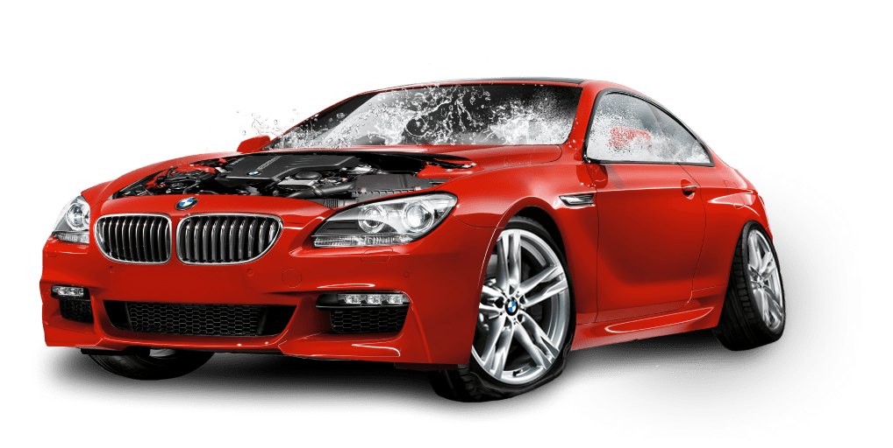
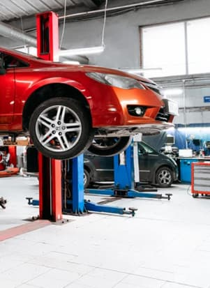
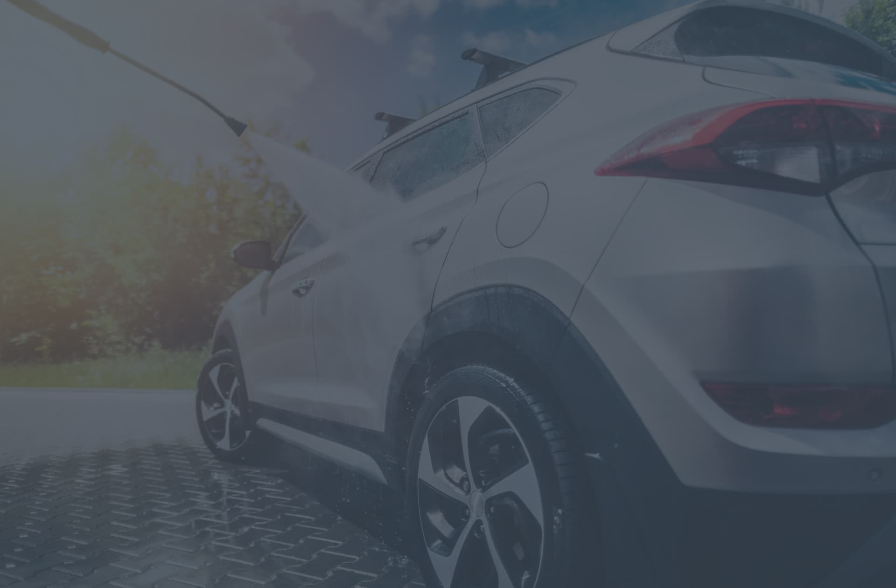

НА ВАШЕЙ
СТОРОНЕ
ДОРОГИ.
От планового обслуживания до ремонта.
Здесь начинается ваш следующий маршрут.

ДВИГАТЕЛЬ · ХОДОВАЯ · ТОРМОЗАВсё, что нужно
вашему автомобилю.
Выберите направление.
Детали обсудим лично.
Автосервис
Диагностика, обслуживание и ремонт узлов автомобиля.
Обсудить ремонт ↗02 / КОЛЁСАШиномонтаж
Монтаж, балансировка и ремонт шин. От R10 до R24.
Подобрать услугу ↗03 / ГЕОМЕТРИЯСход-развал
Проверка и регулировка углов установки колёс.
Уточнить детали ↗04 / ЧИСТОТААвтомойка
Бесконтактная мойка кузова и уход за салоном.
Выбрать уход ↗
ПРОАВТО57 / ВНУТРИ СЕРВИСАВ ДЕТАЛЯХ ↗
Машину —
в сервис.
Планы — в силу.
Посторонний звук? Пришло время ТО?
Начнём с разговора о вашем автомобиле.
Без долгого поиска.
Сразу к делу.
Цены с исходного сайта. Итог уточняйте до начала работ.
Уточнить стоимость ↗
Какой у вас
план на сервис?
Выберите направление и свяжитесь с нами.
Время визита подтвердит сотрудник.
Пара минут —
и всё понятно.
Что сказать при звонке?
Марку и модель автомобиля, нужную услугу или признаки неисправности.
Как узнать точную цену?
Обсудите объём работ с сотрудником. Опубликованные цены — ориентир.
Можно записаться онлайн?
В этой версии запись согласовывается по телефону или почте. Онлайн-формы доступны на исходном сайте.
Орёл.
Московское шоссе, 173.
Пн–пт 09:00–19:00
Сб–вс 09:00–17:00